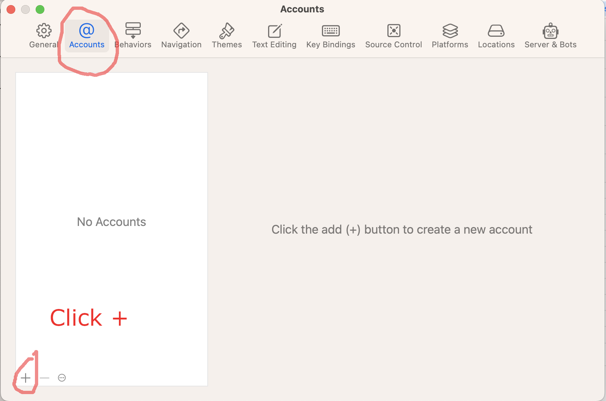
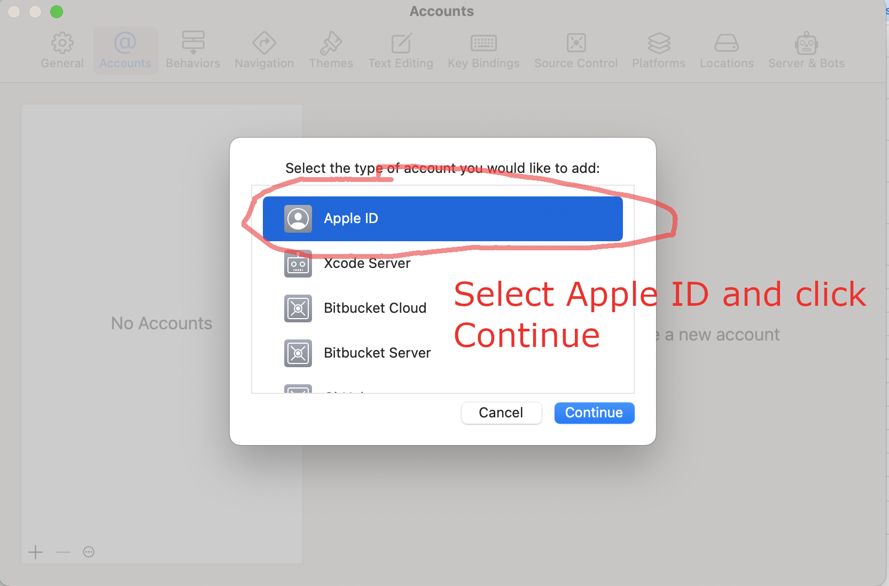
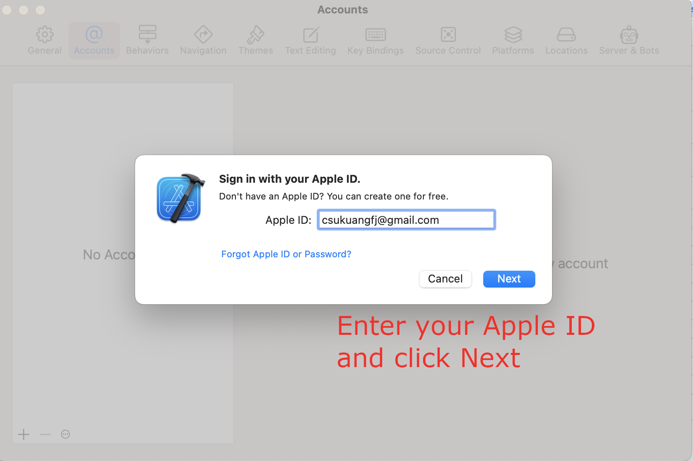
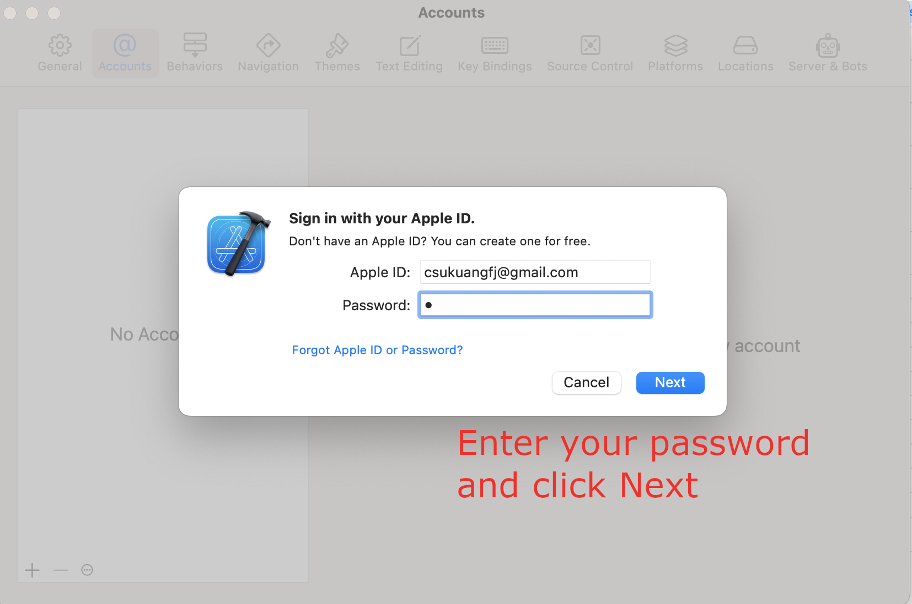
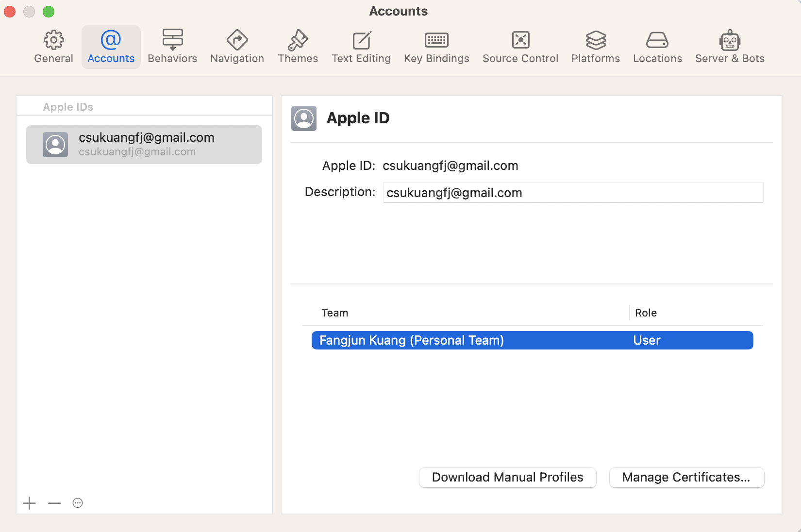
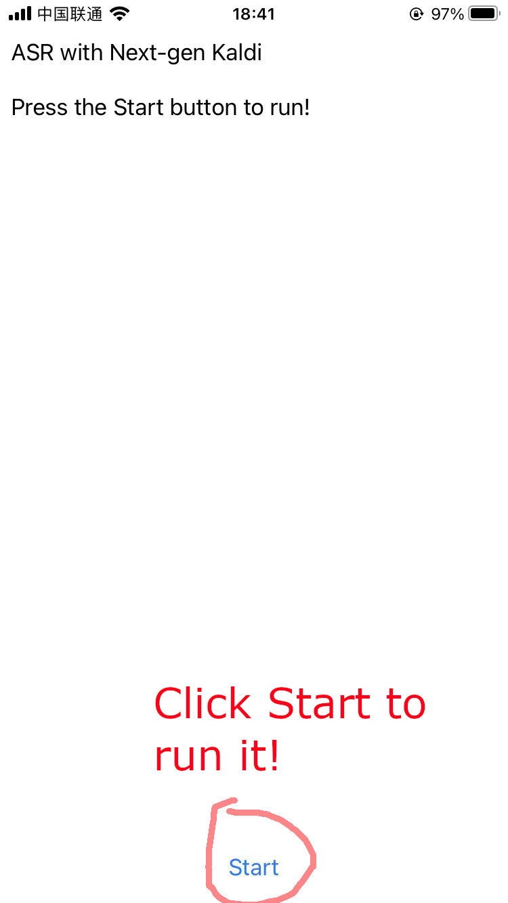

Build sherpa-ncnn for iOS
This section describes how to build sherpa-ncnn for iPhone and iPad.
Requirement
Warning
The minimum deployment requires the iOS version >= 13.0.
Before we continue, please make sure the following requirements are satisfied:
macOS. It won’t work on Windows or Linux.
Xcode. The version
14.2 (14C18)is known to work. Other versions may also work.CMake. CMake 3.25.1 is known to work. Other versions may also work.
(Optional) iPhone or iPad. This is for testing the app on your device. If you don’t have a device, you can still run the app within a simulator on your Mac.
Caution
If you get the following error:
CMake Error at toolchains/ios.toolchain.cmake:544 (get_filename_component): get_filename_component called with incorrect number of arguments Call Stack (most recent call first): /usr/local/Cellar/cmake/3.29.0/share/cmake/Modules/CMakeDetermineSystem.cmake:146 (include) CMakeLists.txt:2 (project)please run:
sudo xcode-select --install sudo xcodebuild -license
And then delete the build directory ./build-ios and re-build.
Please see also https://github.com/k2-fsa/sherpa-onnx/issues/702.
Download sherpa-ncnn
First, let us download the source code of sherpa-ncnn.
Note
In the following, I will download sherpa-ncnn to
$HOME/open-source, i.e., /Users/fangjun/open-source, on my Mac.
You can put it anywhere as you like.
mkdir -p $HOME/open-source
cd $HOME/open-source
git clone https://github.com/k2-fsa/sherpa-ncnn
Build sherpa-ncnn (in commandline, C++ Part)
After downloading sherpa-ncnn, let us build the C++ part of sherpa-ncnn.
cd $HOME/open-source/sherpa-ncnn/
./build-ios.sh
It will generate a directory
$HOME/open-source/sherpa-ncnn/build-ios, which we have already pre-configured
for you in Xcode.
Hint
You don’t have to look at the generated files in $HOME/open-source/sherpa-ncnn/build-ios
to build an app. We have pre-configured it for you.
If you are eager to learn more about the generated files or want to use sherpa-ncnn in your own iOS project, please have a look at For the more curious.
Build sherpa-ncnn (in Xcode)
Use the following command to open sherpa-ncnn in Xcode:
cd $HOME/open-source/sherpa-ncnn/ios-swift/SherpaNcnn
open SherpaNcnn.xcodeproj
It will start Xcode and you will see the following screenshot:
{kind=link}
Please select Product -> Build to build the project. See the screenshot
below:
{kind=link}
After finishing the build, you should see the following screenshot:
{kind=link}
Congratulations! You have successfully built the project. Let us run the
project by selecting Product -> Run, which is shown in the following
screenshot:
{kind=link}
Please wait for a few seconds before Xcode starts the simulator.
Unfortunately, it will throw the following error:
{kind=link}
The reason for the above error is that we have not provided the pre-trained model yet.
The file ViewController.swift pre-selects the pre-trained model to be csukuangfj/sherpa-ncnn-conv-emformer-transducer-2022-12-06 (Chinese + English), shown in the screenshot below:
{kind=link}
Let us add the pre-trained model csukuangfj/sherpa-ncnn-conv-emformer-transducer-2022-12-06 (Chinese + English) to Xcode. Please follow csukuangfj/sherpa-ncnn-conv-emformer-transducer-2022-12-06 (Chinese + English) to download it from huggingface. You can download it to any directory as you like.
Please right click the project SherpaNcnn and select Add Files to "SherpaNcnn"...
in the popup menu, as is shown in the screenshot below:
{kind=link}
In the popup dialog, switch to the folder where you just downloaded the pre-trained model.
In the screenshot below, it is the
folder /Users/fangjun/open-source/icefall-models/sherpa-ncnn-conv-emformer-transducer-2022-12-06:
{kind=link}
Select required files and click the button Add:
{kind=link}
After adding pre-trained model files to Xcode, you should see the following screenshot:
{kind=link}
At this point, you should be able to select the menu Product -> Run
to run the project and you should finally see the following screenshot:
{kind=link}
Click the button to start recording! A screenshot is given below:
{kind=link}
Congratulations! You have finally succeeded in running sherpa-ncnn with iOS, though it is in a simulator.
Please read below if you want to run sherpa-ncnn on your iPhone or iPad.
Run sherpa-ncnn on your iPhone/iPad
First, please make sure the iOS version of your iPhone/iPad is >= 13.0.
Click the menu Xcode -> Settings..., as is shown in the following screenshot:
{kind=link}
In the popup dialog, please select Account and click + to add
your Apple ID, as is shown in the following screenshots.
 Fig. 18 Screenshot for selecting
Accountand click+. Fig. 19 Screenshot for selecting
Apple IDand clickContinue Fig. 20 Screenshot for adding your Apple ID and click
Next Fig. 21 Screenshot for entering your password and click
Next Fig. 22 Screenshot after adding your Apple ID
{kind=link}
{kind=link}
{kind=link}
{kind=link}
{kind=link}
After adding your Apple ID, please connect your iPhone or iPad to your Mac and select your device in Xcode. The following screenshot is an example to select my iPhone.
{kind=link}
Now your Xcode should look like below after selecting a device:
{kind=link}
Please select Product -> Run again to run sherpa-ncnn on your selected
device, as is shown in the following screenshot:
{kind=link}
After a successful build, check your iPhone/iPad and you should see the following screenshot:
{kind=link}
To fix that, please select Settings -> General -> Device Management
on your device
{kind=link}
Please click Apple Development: csukuangfj... and click Trust "Apple Development: csukuangfj@g..."
in the subsequent dialog, as is shown below:
{kind=link}
At this point, you should be able to run the app on your device. The following is a screenshot about running it on my iPhone:
 Fig. 29 Screenshot for running sherpa-ncnn on iPhone
{kind=link}
Congratulations! You have successfully run sherpa-ncnn on your device!